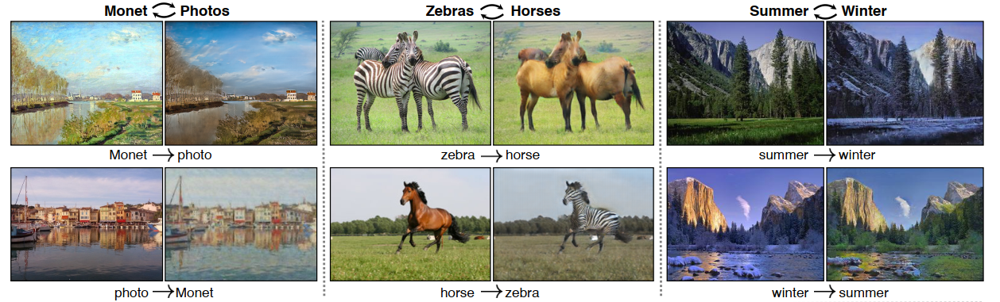
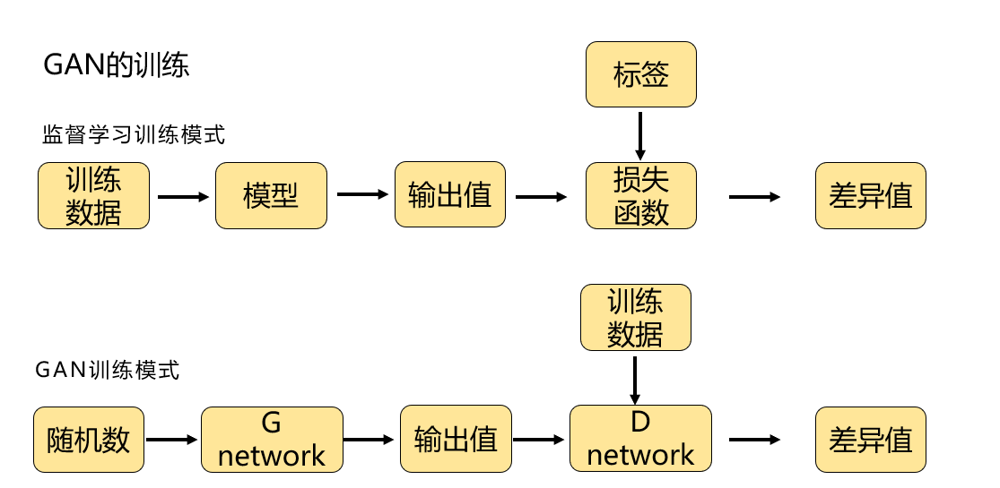
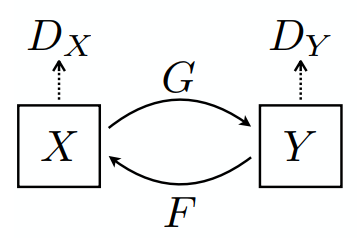
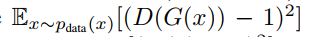
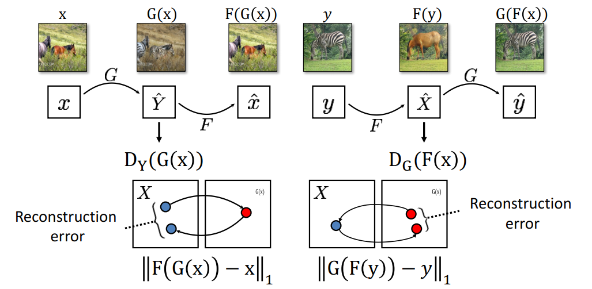
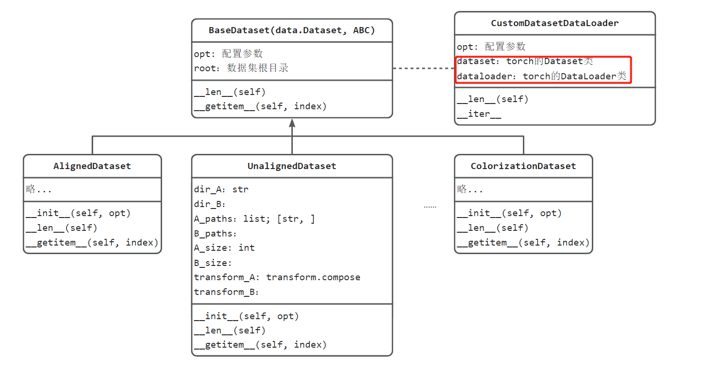
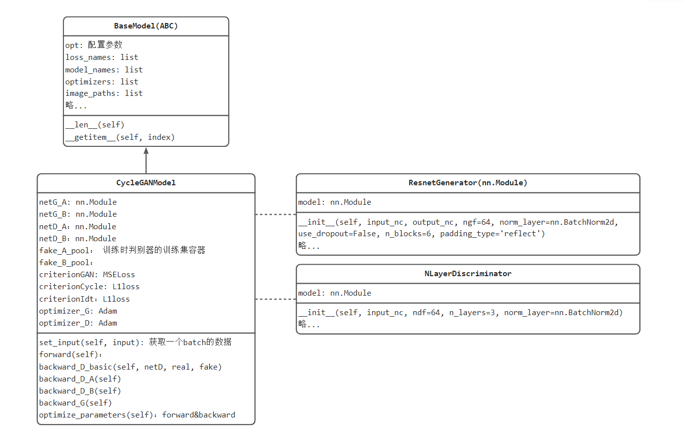
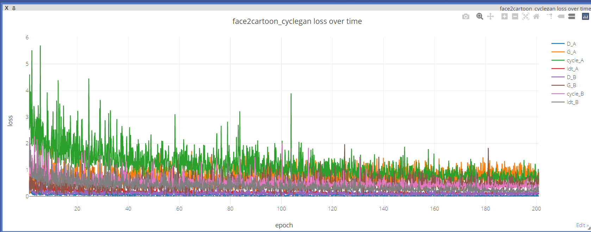
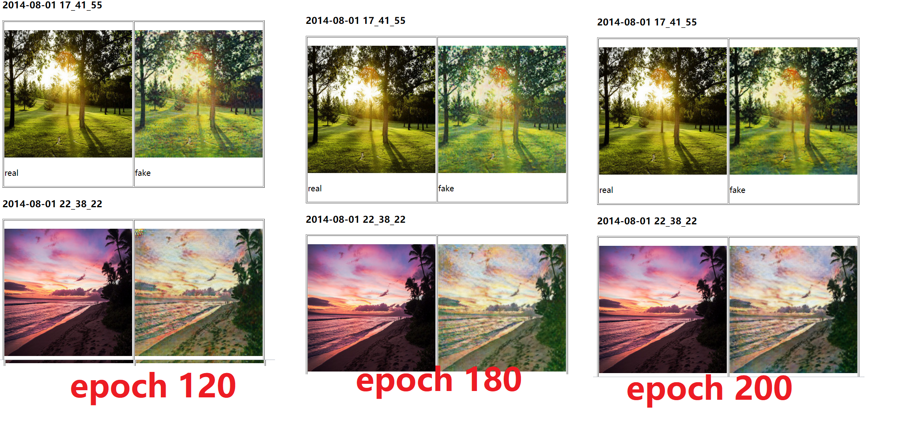

8.5 生成对抗网络——CycleGAN
简介
本小节将介绍GAN模型中有趣的模型CycleGAN。
CycleGAN是一种双向循环的GAN模型，可实现X域与Y域之间的相互转换，并且是基于unpaired data（即不需要标注，只需要收集图片）。相较于此前的pix2pix，cyclegan适用性更广，毕竟unpaired data比paired data更容易获取。
例如论文中展示的，照片与莫奈风格画之间的互相转换，斑马与马之间的转换，夏天与冬天之间的转换。

本节先介绍GAN与CycleGAN的结构，再通过代码详细介绍CycleGAN的训练、推理。
GAN简介
GAN（Generative Adversarial Nets，生成对抗网络）由 Ian J Goodfellow在2014发表于《Generative Adversarial Nets》，可谓是推开了生成模型的一扇大门。
GAN是一种从随机噪声生成特定分布数据的模型，例如生成人脸数据，手写体数据，自定义数据集等。
GAN当中有Generator与Discriminator两个模型，G负责学习从噪声到数据的映射，D负责充当损失函数，判断G生成得是否足够好，G和D交替训练，形成对抗，同步提升，最终使得G生成的数据越来越像人脸。
根据模型的结构，GAN模型延伸出一系列变体，如本文要介绍的CycleGAN，还有DCGAN，Conditional GANs，Pix2Pix，SRGAN等。
GAN的设计十分巧妙，从神经网络训练的角度考虑，GAN是将损失函数替换为，神经网络的输出，具体如下图所示：

传统模型训练，需要用loss_fun(output, label)得到loss值，然后求梯度优化。
在GAN中，巧妙了利用一个判别器模型，D_net， D_net(output) 趋向0， D_net(training_data)趋向1，依次获得loss值。
CycleGAN简介
CycleGAN是一种无监督学习方法，由Jun-Yan Zhu等人于2017年提出。
它的主要思想是通过两个生成器和两个判别器来实现两个不同域之间的图像转换。
与其他的GAN模型不同的是，CycleGAN不需要成对的图像进行训练，而是只需要两个域中的任意数量的图像即可。
下面介绍CycleGAN的模型结构与损失函数。
CycleGAN模型结构
CycleGAN模型由两个生成器，两个判别器构成。
生成器G，将X域图像变换到Y域
生成器F，将Y域图像变换到X域
判别器Dx，判别图像来自X则为1， 图像来自Y则为0
判别器Dy，判别图像来自X则为0， 图像来自Y则为1

生成器采用3层卷积+一系列残差块构成；
判别器采用PatchGANs，其特点在于对一张图片不是输出一个向量，而是输出NxNxC的张量，NxN分别对应原图中的70x70区域，即对一张图，划分多个70x70的patch，每个patch来判别它是0类，还是1类。
CycleGAN损失
cyclegan最大的特点在于损失函数的设计，除了GAN的常规两个损失函数之外，论文中增加了cycle consistency loss（循环一致性损失），用来避免模式坍塌，以及更好的让GAN模型生成合理的图像，同时，在官方代码中还增加了一项identity loss，用来增加GAN模型对于本域图像信息的学习。
因此，整体loss有8项，分别是'D_A', 'G_A', 'cycle_A', 'idt_A', 'D_B', 'G_B', 'cycle_B', 'idt_B'
生成器的损失
loss1 ：判别器的输出接近1
对于G，目标是让对应的判别器D，认为假图像是真图像，即输入是假图像，标签是1，目标是欺骗D，G就是训练好了。

self.loss_G_A = self.criterionGAN(self.netD_A(self.fake_B), True)
target_tensor = self.get_target_tensor(prediction, target_is_real) # 根据self.fake_B，生成对应的标签，即N*N的标签，为patchGAN的输出匹配
loss = self.loss(prediction, target_tensor) # MSELoss() 而非BCE
loss2：F(G(x)) 与 x一致
除了常规Loss，还有cycle consistency loss（循环一致性损失），目的是经过G得到的图片，返回去再经过F，应当是可以恢复得到X域的图像x_hut，并且x与x_hat应当是逐像素一模一样的。
这样的G和F才是合理的。

self.criterionCycle = torch.nn.L1Loss()
self.loss_cycle_A = self.criterionCycle(self.rec_A, self.real_A) * lambda_A # lambda为缩放系数
loss3：恒等映射损失
该损失在代码中才出现，论文中并没有提到。恒等映射损失的思想是，生成器G_A接收A域图像，生成B域图像；若接收B域图像，应该生成恒等的B域图像，即B域图像一模一样，不能变。
G_A should be identity if real_B is fed: ||G_A(B) - B||
self.idt_A = self.netG_A(self.real_B)
self.loss_idt_A = self.criterionIdt(self.idt_A, self.real_B) * lambda_B * lambda_idt
# self.criterionIdt = torch.nn.L1Loss()
因此，对于生成器G而言，要求它：
- 生成的假图像，要让判别器预测为1， D(G(x)) 逼近1；
- G生成的图像，再经过F生成的图像，应当等于原图，此为循环一致性损失
- 已经是B域的图像，经过G_A，应当得到B域的原图。
判别器的loss
判别器损失较为简单，对于真图像，需要预测为1，对于假图像，需要预测为0。
其中，假图像不是基于当前batch的，而是记录过往的一批假图像，从假图像池中抽取。
fake_B = self.fake_B_pool.query(self.fake_B)
self.loss_D_A = self.backward_D_basic(self.netD_A, self.real_B, fake_B)
def backward_D_basic(self, netD, real, fake):
# Real
pred_real = netD(real)
loss_D_real = self.criterionGAN(pred_real, True)
# Fake
pred_fake = netD(fake.detach())
loss_D_fake = self.criterionGAN(pred_fake, False)
# Combined loss and calculate gradients
loss_D = (loss_D_real + loss_D_fake) * 0.5
loss_D.backward()
return loss_D
训练注意事项
论文中超参数：batch size =1；epoch =200；lr：前100epoch，固定0.0002，后100epoch，线性下降至0
其它注意事项：
- 两个域图像是否有一致性： 举个例子:
苹果 <=> 橘子: 都是球形, OK!
苹果 <=> 香蕉: Mode Collapse!
- 训练CycleGAN要有耐心
- 学习率别太高
- 对抗损失权重不要太高，循环一致性损失权重为1的时候，对抗损失一般设置为0.1
- 判别器优化频率高于生成器
- 使用最小二乘损失（MSE）
- cycleGAN的loss不能准确反应训练的好坏，不代表着训练进度，甚至不能代表结果优劣。所以还是要输出样张看效果，或许可以借鉴WGAN的思想
- 由于 minimax 优化的性质，许多 GAN 损失不会收敛（例外：WGAN、WGAN-GP 等）。对于 DCGAN 和 LSGAN 目标，G 和 D 损失上下波动是很正常的。只要不爆炸应该没问题。
CycleGAN代码实现
接下来，通过pytorch训练一个可以将图片转换为莫奈风格图像的CycleGAN，github已经19.5K star了，可见深受大家喜爱。
数据集准备
由于不需要标签，仅需要准备图像，所以在根目录下，存放trainA, trainB, testA, testB即可，分别存放A域的图像，B域的图像。
这里下载官方提供的monet2photo数据集，可以通过sh脚本下载，也可以手动下载（推荐）
# 方法一：bash
bash ./datasets/download_cyclegan_dataset.sh monet2photo
# 方法二：手动下载
# apple2orange, summer2winter_yosemite, horse2zebra, monet2photo, cezanne2photo, ukiyoe2photo, vangogh2photo
http://efrosgans.eecs.berkeley.edu/cyclegan/datasets/$FILE.zip
# 例如莫奈数据下载
http://efrosgans.eecs.berkeley.edu/cyclegan/datasets/monet2photo.zip
数据加载
整个数据模块代码设计如下图所示：

该项目适配pix2pix， cyclegan，因此提供了多种dataset，所有的dataset都继承于BaseDataset，针对cyclegan的是unaligned_dataset.py中的UnalignedDataset。
对于dataloader，提供了一个类 CustomDatasetDataLoader，并且实现了迭代协议iter，因此"dataloader"是自定义的一个可迭代对象。
在主代码01_train.py中，通过33行代码：dataloader = create_dataset(opt) ，实现dataloader的创建，所有的配置信息存放在opt中。
接下来关注UnalignedDataset，它内部实现了transform，transform由opt的参数决定
- 第一步：缩放变换，有resize，或者基于width缩放的方式；默认基于resize_and_crop。 resize的尺寸是opt.load_size
- 第二步：crop的尺寸是 opt.crop_size
- 第三步：Normalize
这份代码中有一个值得借鉴的是，通过参数配置，来选择调用具体的类。实现方法是通过，importlib.import_module实现通过字符串形式import工具库。
def find_dataset_using_name(dataset_name):
"""Import the module "data/[dataset_name]_dataset.py".
In the file, the class called DatasetNameDataset() will
be instantiated. It has to be a subclass of BaseDataset,
and it is case-insensitive.
"""
dataset_filename = "data." + dataset_name + "_dataset"
datasetlib = importlib.import_module(dataset_filename) # 这里的dataetlib，等同于一个库，例如。import cv2的cv2, import torch的torch
dataset = None
target_dataset_name = dataset_name.replace('_', '') + 'dataset'
for name, cls in datasetlib.__dict__.items():
if name.lower() == target_dataset_name.lower() \
and issubclass(cls, BaseDataset):
dataset = cls
if dataset is None:
raise NotImplementedError("In %s.py, there should be a subclass of BaseDataset with class name that matches %s in lowercase." % (dataset_filename, target_dataset_name))
return dataset
模型构建
源代码中将模型（nn.Module）， 损失函数，优化器一并放到了CycleGANModel类当中，对外提供set_input()与optimize_parameters()，实现前向传播、损失计算、反向传播，这样可以让主代码更简洁。
模型部分代码设计如下图所示

对于 netG_A/B，cyclegan中是resnetblock构成的生成器，详细可见models/networks.py的ResnetGenerator类， 主要由resnetblock的下采样和TransConv的上采样构成，最后加入tanh()激活函数。
对于netD_A/B， 是一个patchGAN，全部由卷积层构成的全卷积网络，详见 models/networks.py的NLayerDiscriminator。
整个模型构建与优化核心代码如下：
model = create_model(opt) # create a model given opt.model and other options
model.setup(opt) # regular setup: load and print networks; create schedulers
----------------------------------
model.set_input(data) # unpack data from dataset and apply preprocessing
model.optimize_parameters() # calculate loss functions, get gradients, update network weights
模型训练
数据、模型、损失函数与优化器准备完毕，可以进行迭代训练。
如果在windows下训练，需要开启 visdom
python -m visdom.server
由于此处使用了visdom进行可视化，需要先行开启visdom，否则会报错：
requests.exceptions.ConnectionError: HTTPConnectionPool(host='localhost', port=8097): Max retries exceeded with url: /env/main (Caused by NewConnectionError('<urllib3.connection.HTTPConnection object at 0x000001D60D9110D0>: Failed to establish a new connection: [WinError 10061] 由于目标计算机积极拒绝，无法连接。'))
[WinError 10061] 由于目标计算机积极拒绝，无法连接。
训练指令：
python 01_train.py --n_epochs 200 --dataroot path/to/your/datasets/monet2photo --name monet2photo_cyclegan --model cycle_gan
日志信息、模型信息将存储于checkpoints\monet2photo_cyclegan中
训练结果
cycleGAN的loss不能准确反应训练的好坏，不代表着训练进度，甚至不能代表结果优劣，整体趋势是，cycle loss逐渐下降，如下图所示

推理测试
预训练模型可以从这里下载：链接：https://pan.baidu.com/s/1bEPNBbAeqMumpM2pqKwb4w 提取码：q159
python 02_inference.py --dataroot G:\deep_learning_data\cyclegan\monet2photo\testB --name monet2photo_cyclegan --model test --no_dropout --model_suffix _B180
model_suffix 格式说明：模型模型文件名保存为latest_net_G_A.pth、latest_net_G_B.pth。在代码中会自动拼接：
"latest_net_G{}.pth".format(model_suffix)
最后在F:\pytorch-tutorial-2nd\code\chapter-8\cyclegan\results\monet2photo_cyclegan\test_latest下就有对应的结果图片
这里展示了120， 180， 200个epoch时的展示效果，感觉180时的效果最好。

小结
本小结先介绍了GAN与cycleGAN的模型结构，GAN是一个巧妙的利用神经网络进行损失计算的设计，CycleGAN是巧妙的利用了两个GAN相互转换，并提出循环一致性loss，最终CycleGAN的损失共8个，分别是'D_A', 'G_A', 'cycle_A', 'idt_A', 'D_B', 'G_B', 'cycle_B', 'idt_B'。
然后介绍CycleGAN源代码使用及设计，其将Dataset, DataLoader, model, loss, optim进行了高度封装，使主代码很简洁。
从此可见，无论多复杂、难理解的pytorch模型训练代码，都离不开Dataset, DataLoader, nn.Module，loss, optim，只要了解训练的步骤，这些复杂的代码都可以梳理出来。
自2014年GAN提出以来，往后的5年间提出了各式各样的GAN变体，也有了非常多有趣的应用，感兴趣的朋友可以进一步了解。
2020年之前，在图像生成领域，GAN是当之无愧的主流，但2020年《Denoising Diffusion Probabilistic Models》（Diffusion）提出后，基于扩散模型（diffusion model）的图像生成称为了学术界的宠儿，包括OpenAI提出的DALL-E系列，stability.ai提出的Stable-Diffusion。
下一节将介绍扩散模型（diffusion model）及代码实现